| 문서 버전 | v1.0 | 작성일 | 2026. 11. 24. |
|---|---|---|---|
| 발주기관 | (가상) 한빛시 문화재단 한빛아트센터 | ||
| 작성 | 서비스 기획 | 보안 등급 | 일반 |
| 버전 | 일자 | 개정 내용 | 작성 | 검토/승인 |
|---|---|---|---|---|
| v1.0 | 2026. 11. 24. | 최초 작성. 사용자 18개, 관리자 14개 화면 정의, 화면 흐름과 공통 규칙, 주요 25개 화면 상세 설계(프로토타입 화면 기준) | 서비스 기획 | 발주기관 검토 |
| 목적 | 요구사항정의서 v1.1(HB-PMO-REQ-01)의 기능 요구사항을 화면 단위로 나누어 화면 구성, 표시 내용, 동작, 처리 규칙, 오류와 빈 상태 안내를 정합니다. 개발, 테스트, 검수의 화면 기준 문서입니다. |
|---|---|
| 범위 | 사용자 화면(공연 예매, 체험과 정규 강좌 신청, 대기, 마이페이지, 회원)과 관리자 화면(운영 담당, 정산 담당 업무). 결제대행 결제창과 본인확인기관 화면은 연계 지점만 표시합니다. |
| 화면 기준 | 로컬 검수 환경의 프로토타입 화면을 시연 계정과 시연 데이터로 조작해 캡처했습니다(2026.11.24, PC 1440px 너비, 모바일 390 x 844). 캡처의 날짜와 금액은 시연 데이터 값입니다. |
| 화면 ID | UI-U(사용자), UI-A(관리자) + 두 자리 번호. 경로는 해시 주소(#/...)이며 관리자 화면은 admin.html 아래에 있습니다. |
| 표시 번호 | 화면별 설계의 캡처 위 빨간 원 번호는 오른쪽 설명 표의 번호와 같고, 가는 빨간 테두리는 그 항목의 영역입니다. |
| 관련 문서 | 요구사항정의서 v1.1, 요구사항 추적표 v1.1(HB-PMO-TRC-01), 테스트 결과서 v1.0, DESIGN.md(디자인 기준) |
사용자 18개, 관리자 14개 화면입니다. 「설계 쪽」이 있는 화면은 4장에 화면별 설계를 두었고, 없는 화면은 같은 틀의 변형으로 4장의 관련 화면 비고에 적었습니다.
모든 예약은 로그인한 회원만 할 수 있습니다. 좌석, 인원 선택에서 다음 단계로 넘어갈 때 10분 선점을 만들고, 할인, 결제 단계는 같은 머리말과 남은 선점 시간을 고정해 보입니다.
운영 담당이 요청하고 정산 담당이 승인하는 2인 처리입니다. 요청 중에는 그 회차의 새 예매와 결제를 막고, 승인하면 확정 예약 전부를 결제 금액 그대로 환불하며 대상자에게 알림을 보냅니다.
| 표기 | 뜻 |
|---|---|
| 화면 | 화면(위 작은 글자는 화면 ID) |
| 처리 | 서버가 자동으로 하는 처리(승격, 일괄 환불) |
| 조건 | 시간 조건에 따른 분기(선점 만료, 결제 기한, D-2) |
| 보조 | 분기에서 이어지는 보조 화면 |
아래 값은 프로토타입 소스(src/styles/tokens.css, user.css, admin.css, motion.css, src/lib/format.js, 공통 컴포넌트)와 DESIGN.md 에서 옮긴 것입니다. 사용자 화면은 KRDS 구조 위에 「포스터가 색을 맡고 UI는 물러나는」 편집형, 관리자 화면은 공공 관리자 표준 틀입니다.
| 구분 | PC (1440) | 태블릿 (768) | 모바일 (390) |
|---|---|---|---|
| 본문 폭, 여백 | 최대 1,280px 가운데 정렬, 좌우 여백 40px | 좌우 여백 4vw(약 31px) | 좌우 여백 16px |
| 프로그램 목록 | 포스터 카드 3열(가로 간격 32px, 세로 48px) | 2열(860px 이하) | 2열, 필터는 세로로 쌓고 유형 버튼은 가로 스크롤(560px 이하) |
| 프로그램 상세 | 포스터와 정보 2단, 포스터 따라옴 | 포스터 240px + 정보 2단, 예매 버튼은 화면 아래 고정 바 | 1단(포스터 최대 240px), 아래 고정 바 |
| 예매 단계 | 본문 + 오른쪽 요약 360px(1100px 이하 320px), 요약 고정 | 1단, 요약은 본문 아래, 다음 단계 버튼은 아래 고정 바 | 1단, 남은 선점 시간은 머리말 아래 띠, 좌석은 「좌석 목록」 기본 |
| 마이페이지 | 왼쪽 메뉴 220px + 본문 | 메뉴가 밑줄 탭으로 바뀜(860px 이하) | 밑줄 탭, 카드 정보 1단 |
| 관리자 | 상단 바 56px + 좌측 메뉴 232px + 본문(여백 24/32px), 주요 수치 4열 | 좌측 메뉴는 「메뉴」 버튼으로 여는 서랍(900px 이하), 조회 조건 1열, 통합 검색 숨김 | 주요 수치 2열, 상단 바는 역할과 이름 숨김(560px 이하) |
CSS 중단점: 사용자 1100, 860, 560px / 관리자 1180, 900, 560px. 모든 화면은 PC 1440px, 모바일 390px에서 가로 넘침이 없어야 합니다(QUR-003).
| 영역 | 규칙 |
|---|---|
| 헤더 | 높이 72px, 화면 위에 고정(sticky). 왼쪽 로고(한빛아트센터, 한빛시 문화재단) - GNB - 오른쪽 회원 메뉴 |
| GNB 1depth | 공연, 체험, 정규 강좌, 이용 안내. 지금 있는 메뉴와 열린 메뉴는 아래 2px 선으로 표시 |
| GNB 2depth | 공연: 전체 공연, 이번 달 공연, 다음 달 공연 / 체험: 전체 체험, 가족 체험 / 정규 강좌: 전체 강좌, 수강 신청 안내 / 이용 안내: 취소/환불 규정, 관람 안내/오시는 길. 모든 2depth 는 실제 목록 필터나 안내 화면으로 연결 |
| 키보드 | Enter, Space 로 열고 닫음, 아래 화살표로 열고 첫 링크로 이동, 위아래 화살표는 링크 사이, 좌우 화살표는 1depth 사이, Esc 는 닫고 1depth 버튼으로 초점 복귀 |
| 모바일 | 860px 이하에서 GNB 대신 「전체 메뉴」 버튼(44px)과 아코디언 메뉴, 아래에 내 예약, 내 정보, 로그아웃 |
| 회원 메뉴 | 비회원: 로그인, 회원 가입 / 회원: 내 예약, 이름 님(내 정보), 로그아웃 |
| 1depth 묶음 | 2depth 메뉴 | 경로 | 운영 담당 | 정산 담당 | 노출 환경 |
|---|---|---|---|---|---|
| 대시보드 | 대시보드 | #/ | ● | ● | 전체 |
| 프로그램관리 | 프로그램 목록 | #/programs | ● | 전체 | |
| 회차/좌석 관리 | #/offerings | ● | 전체 | ||
| 예약관리 | 예약 내역 | #/bookings | ● | ● | 전체 |
| 대기자 관리 | #/waitlist | ● | 전체 | ||
| 결제/정산 | 결제/환불 내역 | #/payments | ● | 전체 | |
| 회차 취소 승인 | #/cancel-requests | ● | ● | 전체(운영 담당은 요청, 정산 담당은 승인) | |
| 정산 현황 | #/settlement | ● | 전체 | ||
| 시스템 | 작업 이력 | #/audit | ● | ● | 전체 |
| 검수용 시계 | #/system/clock | ● | 검수, 로컬 환경 | ||
| 시연 데이터 초기화 | #/system/reset | ● | 공개 시연, 로컬 환경 |
역할이나 환경에 맞지 않는 메뉴는 그리지 않고, 하위 메뉴가 모두 빠진 묶음은 숨깁니다. 주소로 직접 들어오면 「이 메뉴를 쓸 권한이 없습니다」 또는 「이 환경에서는 쓸 수 없는 메뉴입니다」와 「대시보드로 이동」을 보입니다. 묶음 아이콘은 5개 묶음 머리에만 씁니다. 30분 동안 쓰지 않으면 자동 로그아웃합니다.
| 요소 | 기본 | 마우스 올림(hover) | 누름(active) | 초점(focus) | 사용 불가(disabled) | 처리 중(busy) |
|---|---|---|---|---|---|---|
| 주 버튼 btn-primary | #256ef4 흰 글자, 높이 48px | #0b50d0 | #083891, 1px 아래로 | 2px #256ef4 바깥선, 간격 2px | 회색 바탕 #cdd1d5, aria-disabled="true", 커서 not-allowed | 스피너 + 「처리 중」, 너비 유지, aria-busy, 중복 클릭 무시 |
| 보조 버튼 btn-secondary | 흰 바탕, #cdd1d5 테두리 | #f4f5f6 바탕, 테두리 진하게 | #e6e8ea 바탕, 1px 아래로 | 같음 | 흰 바탕, 흐린 글자 #58616a | 같음 |
| 글자 버튼 btn-text | #0b50d0 글자, 높이 44px | #ecf2fe 바탕, 밑줄 | #083891 | 같음 | - | - |
| 위험 버튼 | #de3412 계열(회원 탈퇴, 시연 데이터 초기화, 회차 취소 승인 확인) | 진하게 #9d230b | #7d1c08 | 같음 | - | 같음 |
| 좌석, 카드 | 등급 색 R #3b4f6b, S #7a8ea8, A #b9c5d3, 판매 완료 #dfe2e5 | 2px 위로 뜸 | 제자리 | 같음 | 판매, 선점 좌석 not-allowed | - |
행동 색은 KRDS primary #256ef4 하나만 씁니다. 상태 칩(확정, 취소, 대기, 승격 등)과 경고에만 다른 색을 쓰고 항상 글자를 함께 씁니다. 전환은 색, 배경, 테두리만 160ms, 움직임은 세로 이동 한 종류이며 「동작 줄이기」 설정이면 모두 끕니다. 누를 수 있는 요소는 최소 44px(기본 버튼 48px)입니다.
| 항목 | 규칙 |
|---|---|
| 스켈레톤 | 300ms 안에 끝나면 그리지 않아 깜빡이지 않음. 실제 화면 모양을 따라 그림: 목록 카드(cards), 상세(detail), 좌석 배치도(seat-map), 표(table), 양식(form), 세로 목록(list), 수치 카드(kpis), 막대 그래프(chart) |
| 접근성 | 불러오는 영역에 바로 aria-busy="true", 모양이 나타날 때 화면 낭독용 「불러오는 중」 문구 |
| 처리 중 버튼 | 서버 요청 동안 스피너와 「처리 중」, 버튼 너비 유지, 같은 동작의 다른 버튼(모바일 아래 바)도 함께 잠금 |
| 상황 | 안내(제목 / 다음 행동) |
|---|---|
| 목록 결과 없음 | 「조건에 맞는 프로그램이 없습니다.」 / 「조건 초기화」, 관리자 「조건에 맞는 예약이 없습니다.」 / 「기간을 넓히거나 조회 조건을 초기화해 주세요.」 |
| 마이페이지 빈 목록 | 「예정된 예약이 없습니다.」, 「대기 신청한 내역이 없습니다.」, 「받은 알림이 없습니다.」 / 「예매할 공연, 강좌 찾기」 |
| 불러오기 실패 | 「프로그램 목록을 불러오지 못했습니다. 잠시 후 다시 시도해 주세요.」 / 「다시 시도」, 관리자 「목록을 불러오지 못했습니다.」 + 원인 / 「다시 시도」 |
| 한도 초과 | 「1인 예약 한도를 넘었습니다. 남은 수량 안에서 선택해 주세요.」 |
| 선점 만료 | 「선점 시간이 지나 좌석이 해제되었습니다. 다시 선택해 주세요.」 / 「좌석 다시 선택」 |
| 좌석 충돌 | 「방금 다른 분이 선택한 좌석입니다. 다른 좌석을 선택해 주세요.」 |
| 매진 | 「매진되었습니다. 대기 신청을 하실 수 있습니다.」 |
| 결제 실패 | 「결제가 완료되지 않았습니다.」 + 사유, 「선점은 남은 시간 동안 유지됩니다.」 / 「할인 선택으로 돌아가기」 |
| 내려받기 0건 | 「내려받을 내역이 없습니다. 조회 조건을 바꿔 다시 조회한 뒤 내려받아 주세요.」 |
오류 문구는 원인과 다음 행동을 함께 쓰고, 서버 내부 정보(오류 원문, 코드)는 화면에 보이지 않고 콘솔에만 남깁니다(SER-008, QUR-007). 입력 오류는 칸 아래에 쓰고 첫 오류 칸으로 초점을 옮깁니다.
| 항목 | 형식 | 예 |
|---|---|---|
| 날짜(전체) | 연.월.일(요일), 0 채움 점 형식 | 2026.12.01(화) |
| 일시 | 날짜 + 24시간 시각 | 2026.12.01(화) 19:30 |
| 짧은 날짜, 일정 | 월.일 / 월.일(요일) 시각 | 12.01 / 12.01(화) 19:30 |
| 기간 | 시작 - 끝(같은 해면 끝의 연도 생략, 하이픈 앞뒤 띄움) | 2026.12.12 - 12.13 |
| 시간대 | 저장은 UTC, 표시와 D-day 판단은 한국 표준시(KST) 달력 날짜(DAR-004) | 관람 12.10, 취소 12.03 은 D-7 |
| 금액 | 원 단위 정수, 천 단위 쉼표, 숫자 뒤 「원」. 표에서는 오른쪽 정렬, 고정폭 숫자 | 40,000원 |
| 금액 계산 | 할인액은 매수별 원 미만 버림, 환불액 = 결제액 x 환불 비율의 원 미만 버림, 수수료 = 결제액 - 환불액(DAR-003) | 12,345원 D-7: 환불 11,110원, 수수료 1,235원 |
| 휴대폰 | 010-0000-0000 하이픈 형식 | 010-1234-5678 |
| 개인정보 가림(관리자 목록) | 이름은 첫 글자와 끝 글자만, 2글자면 끝 글자 가림. 휴대폰은 앞 3자리와 뒤 4자리만(SER-005) | 김*수, 이*, 010-****-5678 |
| 관리자 날짜 입력 | 브라우저 기본 날짜 입력(DESIGN.md 허용 예외), 입력 밖은 점 형식 | 2026-11-18 입력, 2026.11.18 표시 |
| 항목 | 규칙 |
|---|---|
| 건너뛰기 | 첫 Tab 에 「본문으로 건너뛰기」, 누르면 본문으로 초점 이동 |
| 초점 표시 | 모든 누르는 요소에 2px #256ef4 바깥선(focus-visible). 화면을 옮기면 맨 위에서 시작 |
| 키보드만으로 예약 | 좌석 배치도는 화살표 이동, Enter 선택, Space 해제, Tab 은 배치도 안에서 한 곳에만 멈춤. 같은 선택을 「좌석 목록」 표(체크 상자)로도 제공 |
| 알림 읽기 | 오류는 role="alert", 결과와 건수 변화는 role="status" 또는 aria-live="polite". 같은 안내는 되풀이해 만들지 않음. 남은 선점 시간은 분이 바뀔 때만 읽음 |
| 대체 텍스트 | 포스터 장식 사진은 빈 대체 텍스트, 그래프는 같은 내용을 글로 담은 aria-label, 아이콘만 있는 버튼은 aria-label(예: 「R석 E열 6번 선택 해제」) |
| 대비와 색 | 본문 글자 대비 4.5:1 이상(보조 글자 #58616a 는 흰 바탕 6.3:1), 포스터 글자는 사진 위아래 막으로 4.5:1 유지, 색만으로 상태를 전하지 않음 |
| 누름 영역 | 최소 44 x 44px. 좌석 배치도 좌석(18-22px)은 허용 예외이며 768px 이하에서 44px 좌석 목록을 기본으로 엶 |
주요 25개 화면(사용자 14, 관리자 11)의 실제 화면과 항목별 설계입니다. 캡처는 PC 1440px 너비 기준이며, 모바일에서 배치가 크게 바뀌는 화면은 390px 캡처를 함께 두었습니다.
| 구분 | 화면 |
|---|---|
| 사용자 | UI-U01 홈, 프로그램 목록, UI-U02 프로그램 상세, 회차 선택, UI-U03 좌석 선택(공연), UI-U04 인원 선택(체험, 정규 강좌), UI-U05 대기 신청, UI-U06 할인 선택, UI-U07 결제, UI-U08 결제 결과(성공), UI-U10 내 예약 목록, UI-U11 예약 상세, 예약 취소, UI-U12 대기 신청 목록, UI-U13 알림함, UI-U14 회원 정보, UI-U15 회원 가입(계정 정보, 약관 동의, 연락처 입력) |
| 관리자 | UI-A02 대시보드, UI-A03 프로그램 목록, UI-A05 회차/좌석 관리(목록), UI-A06 회차 등록, 수정, UI-A07 예약 내역, UI-A08 대기자 관리, UI-A09 결제/환불 내역, UI-A10 회차 취소 요청, 승인, UI-A11 정산 현황, UI-A12 작업 이력, UI-A13 검수용 시계(검수 환경) |
| 화면 ID | UI-U01 | 화면명 | 홈, 프로그램 목록 | 사용자 | 비회원, 회원 |
|---|---|---|---|---|---|
| 경로 | #/, #/programs | 관련 요구사항 | SFR-003, PER-001, QUR-003 | ||
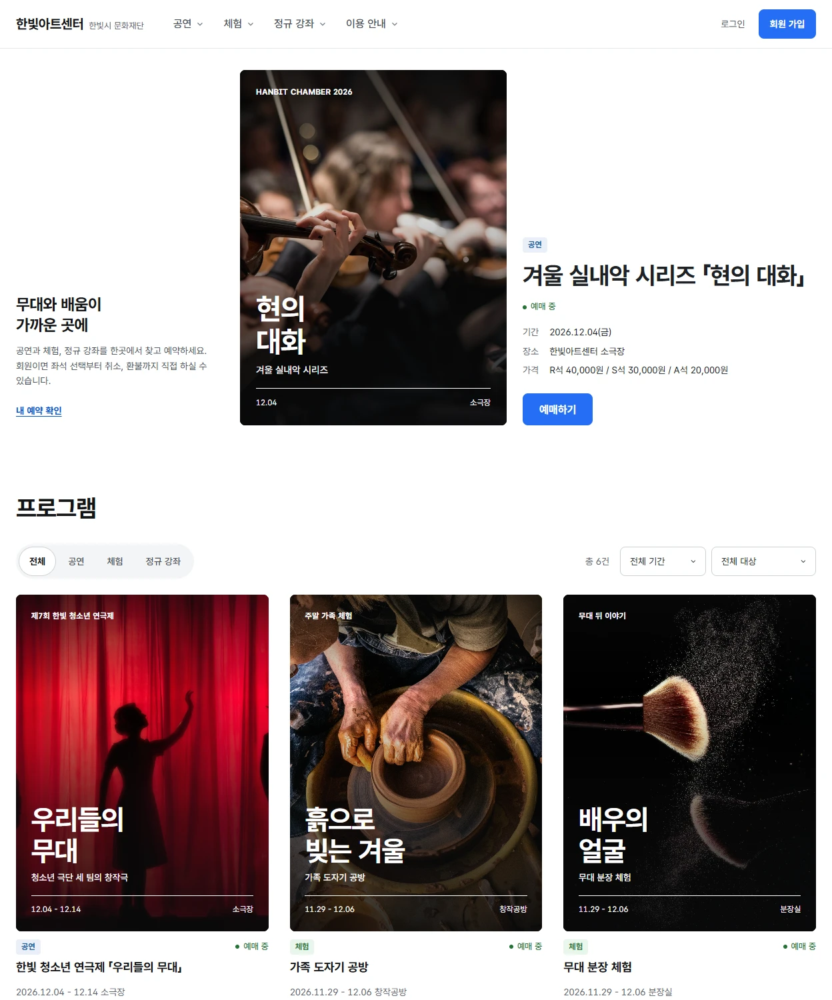
1234567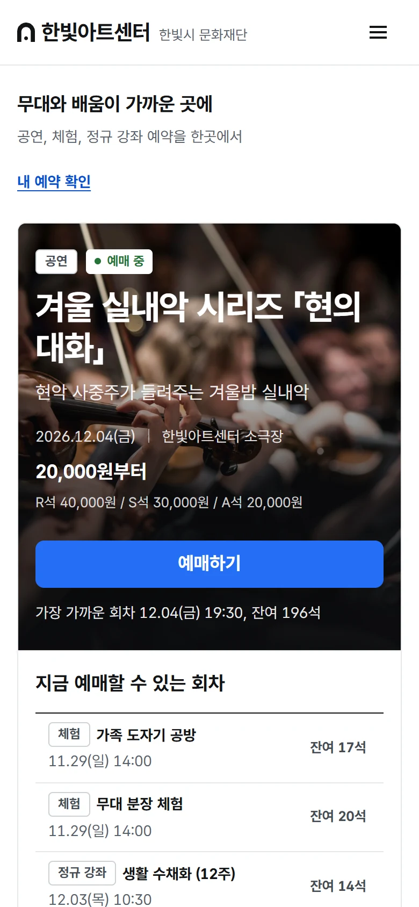
| 번호 | 항목 | 설명(표시 내용, 동작, 처리 규칙, 오류/빈 상태) |
|---|---|---|
| 1 | GNB(2depth) | 공연(전체, 이번 달, 다음 달), 체험(전체, 가족 체험), 정규 강좌(전체, 수강 신청 안내), 이용 안내(취소/환불 규정, 관람 안내/오시는 길). 버튼을 누르거나 아래 화살표로 열고 Esc 로 닫습니다. 이번 달/다음 달은 서버 기준 시각으로 계산합니다. |
| 2 | 회원 메뉴 | 비회원은 로그인, 회원 가입. 로그인하면 내 예약, 이름(회원 정보), 로그아웃으로 바뀝니다. |
| 3 | 추천 프로그램 | 판매 중인 공연 하나를 큰 포스터와 기간, 장소, 등급별 가격, 판매 상태로 보입니다. 「예매하기」는 프로그램 상세로 이동합니다. |
| 4 | 내 예약 확인 | 로그인한 회원은 내 예약 목록으로, 비회원은 로그인 후 내 예약으로 이동합니다. |
| 5 | 유형 필터 | 전체, 공연, 체험, 정규 강좌. 누르면 목록 제목과 건수가 바로 바뀝니다. |
| 6 | 기간, 대상 필터와 건수 | 기간은 회차가 있는 달만 「2026년 12월」 형식으로, 대상은 등록된 대상 값으로 고릅니다. 「총 N건」으로 결과 수를 알립니다. 결과가 없으면 「조건에 맞는 프로그램이 없습니다.」와 「조건 초기화」 버튼을 보입니다. |
| 7 | 프로그램 카드 | 3:4 포스터, 유형 라벨(공연, 체험, 정규 강좌), 판매 상태(예매 예정, 예매 중, 매진(대기 가능), 마감), 기간(2026.12.04 형식), 가격(공연 「40,000원부터」, 체험 「1인 10,000원」). 3열 격자이고 860px 이하(모바일 포함)는 2열입니다. |
비고목록은 유형, 기간, 대상 조건을 주소(#/programs?type=&month=&target=)에 담아 뒤로 가기와 GNB 2depth 링크로 같은 결과를 엽니다.
| 화면 ID | UI-U02 | 화면명 | 프로그램 상세, 회차 선택 | 사용자 | 비회원, 회원 |
|---|---|---|---|---|---|
| 경로 | #/programs/:id | 관련 요구사항 | SFR-004, SFR-013, SFR-014 | ||
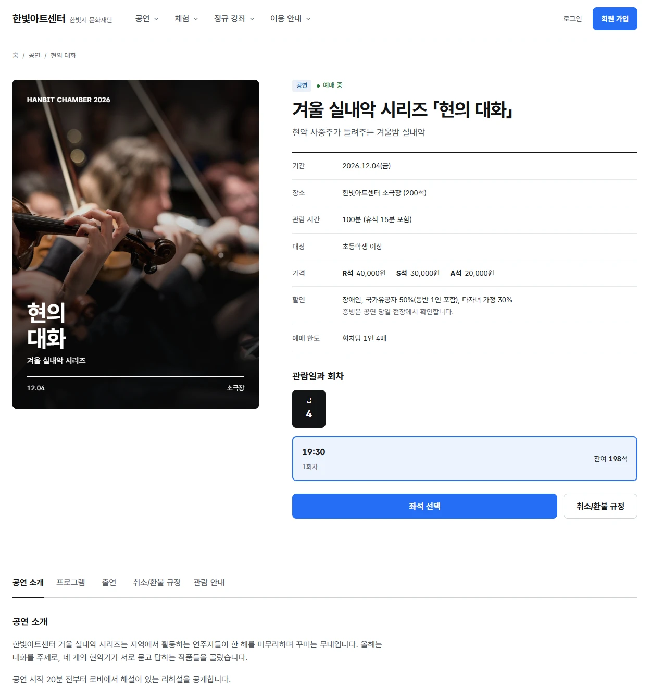
12345678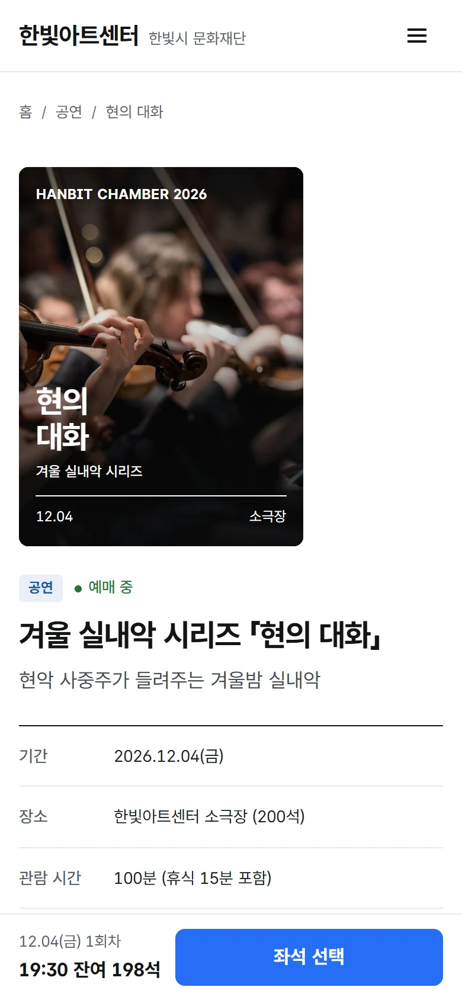
| 번호 | 항목 | 설명(표시 내용, 동작, 처리 규칙, 오류/빈 상태) |
|---|---|---|
| 1 | 현재 위치 | 홈 > 유형 > 프로그램명. 유형을 누르면 그 유형으로 거른 목록으로 갑니다. |
| 2 | 포스터 | 사진 위에 프로그램별 2줄 제목을 얹은 포스터. 넓은 화면에서는 스크롤해도 따라옵니다. |
| 3 | 유형, 판매 상태 | 회차 중 하나라도 판매 중이면 「예매 중」, 모두 매진이면 「매진(대기 가능)」입니다. |
| 4 | 기본 정보 | 기간, 장소(공연은 좌석 수), 대상, 가격(등급별 또는 1인, 수강료), 할인(공연, 체험은 동반 1인 포함, 정규 강좌는 동반 할인 없음, 증빙은 당일 현장 확인), 예매 한도(회차당 1인 4매, 4명, 정규 강좌 1인 1건). |
| 5 | 날짜 선택 | 회차가 있는 날만 누를 수 있고, 고른 날은 진한 테두리로 표시합니다. |
| 6 | 회차 선택 | 시각, 회차 순서, 잔여석(잔여 N석, N명)을 보입니다. 매진 회차는 「대기 신청」, 판매 전과 마감 회차는 상태만 보이고 고를 수 없습니다. |
| 7 | 다음 단계 버튼 | 「좌석 선택」(체험 「신청하기」, 강좌 「수강 신청」) 또는 매진 시 「대기 신청」. 비회원은 로그인 화면을 거쳐 같은 회차로 돌아옵니다. 860px 이하에서는 화면 아래 고정 바로 바뀝니다. |
| 8 | 상세 탭 | 소개, 프로그램, 출연(강좌는 수업 일정), 취소/환불 규정, 관람 안내로 바로 이동. 취소/환불 규정 표는 가격 기준 환불액(8일 전까지 전액, 7-4일 전 90%, 3-1일 전 70%, 당일 취소 불가)을 계산해 보입니다. |
비고불러오기 실패 시 「프로그램 정보를 불러오지 못했습니다.」와 「다시 시도」, 없는 주소는 「프로그램을 찾을 수 없습니다.」와 「프로그램 목록」 버튼을 보입니다. 이용 안내(UI-U18)는 같은 머리말 아래 취소/환불 규정 표, 관람 안내와 오시는 길, 수강 신청 안내를 보입니다.
| 화면 ID | UI-U03 | 화면명 | 좌석 선택(공연) | 사용자 | 회원 |
|---|---|---|---|---|---|
| 경로 | #/booking/:offeringId/select | 관련 요구사항 | SFR-005, SFR-007, SFR-008, PER-004, QUR-001 | ||
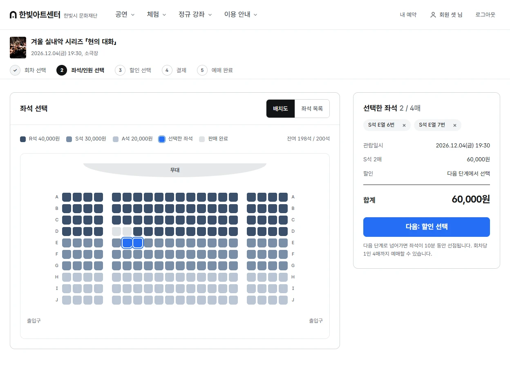
12345678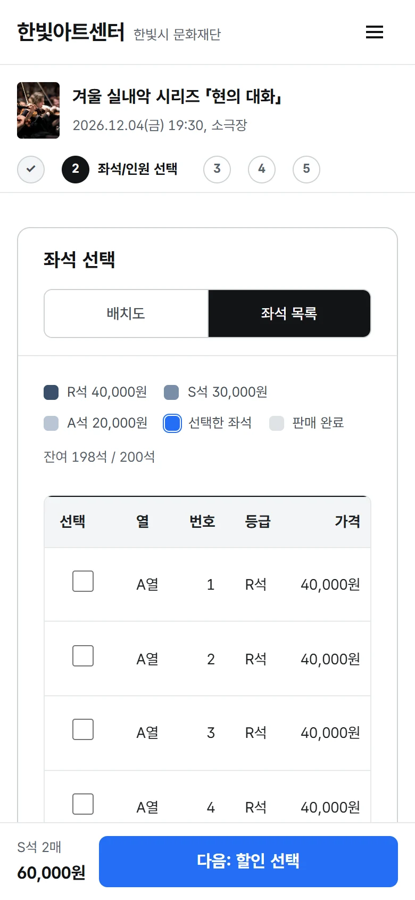
| 번호 | 항목 | 설명(표시 내용, 동작, 처리 규칙, 오류/빈 상태) |
|---|---|---|
| 1 | 예매 머리말 | 작품명, 일시(2026.12.04(금) 19:30 형식), 장소. 할인, 결제 단계까지 같은 자리에 고정됩니다. |
| 2 | 단계 표시 | 회차 선택 > 좌석/인원 선택 > 할인 선택 > 결제 > 예매 완료. 현재 단계는 aria-current 로 알립니다. |
| 3 | 보기 전환 | 「배치도」와 「좌석 목록」(열, 번호, 등급, 가격, 상태 표와 체크 상자)이 같은 선택 상태를 씁니다. 키보드, 화면 낭독기 사용자를 위한 대체 수단입니다(SFR-005). |
| 4 | 범례, 잔여석 | R석, S석, A석, 선택한 좌석, 판매 완료를 색과 글자로 함께 보이고, 「잔여 198석 / 200석」처럼 남은 좌석을 표시합니다. |
| 5 | 좌석 배치도 | 무대 기준 A-J열 200석(4+12+4 블록). 판매, 선점, 대기 배정 좌석은 누를 수 없습니다. 방향키로 이동, Enter 선택, Space 해제. 한도(회차당 1인 4매, 기존 확정과 선점 합산)를 넘기면 고르지 않고 화면 위 안내 한 곳에 알립니다. |
| 6 | 선택한 좌석 | 「2 / 4매」처럼 선택 수와 남은 한도를 보이고, 좌석 칩(등급, 열, 번호)의 x 로 하나씩 해제합니다. |
| 7 | 합계 | 등급별 매수와 금액, 할인은 다음 단계에서 선택. 금액은 원 단위, 천 단위 쉼표(60,000원)입니다. |
| 8 | 다음: 할인 선택 | 누르면 좌석을 10분 동안 선점합니다. 그사이 다른 회원이 잡은 좌석이면 「방금 다른 분이 선택한 좌석입니다.」를 알리고 배치도를 새로 그립니다. 처리 중에는 「처리 중」 표시로 중복 요청을 막습니다. |
비고768px 이하에서는 44px 체크 행의 「좌석 목록」을 기본 보기로 엽니다(배치도 좌석은 18-22px로 DESIGN.md 허용 예외).
| 화면 ID | UI-U04 | 화면명 | 인원 선택(체험, 정규 강좌) | 사용자 | 회원 |
|---|---|---|---|---|---|
| 경로 | #/booking/:offeringId/select | 관련 요구사항 | SFR-006, SFR-007, SFR-008 | ||
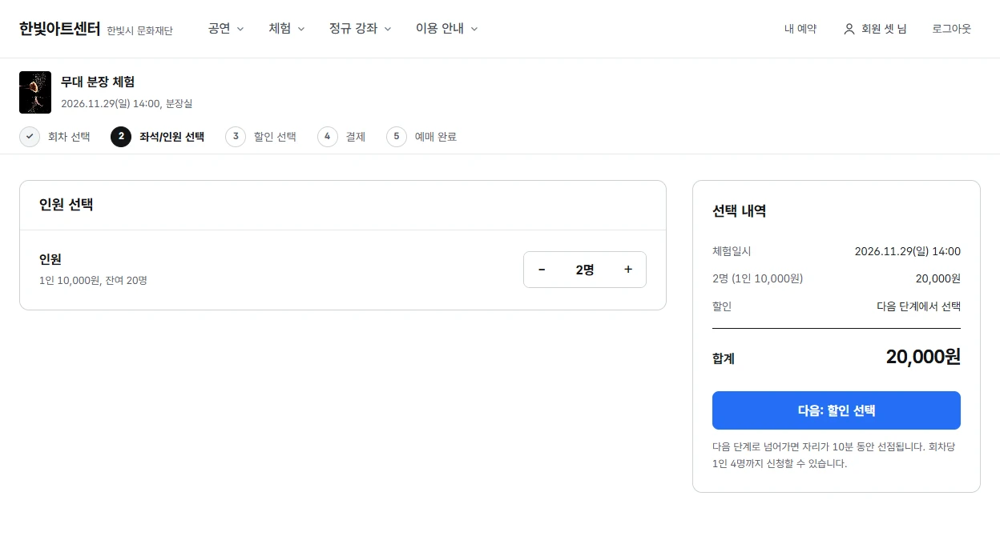
123456| 번호 | 항목 | 설명(표시 내용, 동작, 처리 규칙, 오류/빈 상태) |
|---|---|---|
| 1 | 화면 제목 | 체험은 「인원 선택」, 정규 강좌는 「수강 신청」. |
| 2 | 단가와 잔여 | 「1인 10,000원, 잔여 20명」. 선점 실패 뒤에는 잔여 정원을 다시 불러와 바꿉니다. |
| 3 | 인원 조절 | -, + 버튼(44px)과 현재 인원. 최대는 남은 1인 한도(회차당 4명에서 기존 확정, 선점 수를 뺀 값)와 잔여 정원 중 작은 값입니다. 한도에 닿으면 한도 안내를, 정원에 닿으면 「남은 정원보다 많이 선택할 수 없습니다.」를 알립니다. |
| 4 | 선택 내역 | 체험일시, 「2명 (1인 10,000원)」과 금액, 할인은 다음 단계에서 선택. |
| 5 | 다음: 할인 선택 | 자리를 10분 동안 선점하고 할인 선택으로 이동합니다. 이미 선점한 자리가 있으면 「이어서 진행」과 「선점 해제」를 대신 보입니다. |
| 6 | 선점, 한도 안내 | 「다음 단계로 넘어가면 자리가 10분 동안 선점됩니다. 회차당 1인 4명까지 신청할 수 있습니다.」 |
비고정규 강좌는 같은 틀에서 「수강 신청」 제목과 「본인 1명 신청」 고정 표시, 수강료와 잔여 정원을 보이며 인원을 바꿀 수 없습니다.
| 화면 ID | UI-U05 | 화면명 | 대기 신청 | 사용자 | 회원 |
|---|---|---|---|---|---|
| 경로 | #/booking/:offeringId/select (매진) | 관련 요구사항 | SFR-015, SFR-016, SFR-008 | ||
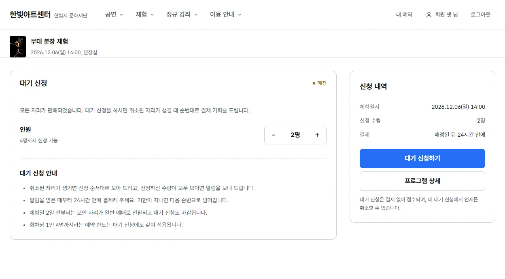
12345| 번호 | 항목 | 설명(표시 내용, 동작, 처리 규칙, 오류/빈 상태) |
|---|---|---|
| 1 | 매진 표시 | 잔여가 0인 판매 중 회차는 선택 화면 대신 같은 주소에서 대기 신청 화면을 엽니다. |
| 2 | 신청 수량 | 공연 「매수」, 체험 「인원」. 「4명까지 신청 가능」은 남은 1인 한도와 회차 정원 중 작은 값입니다. 정규 강좌는 「본인 1명 신청」으로 고정합니다. |
| 3 | 대기 신청 안내 | 취소분을 신청 순서대로 모아 신청 수량이 모두 모이면 알림, 알림부터 24시간 안에 결제, 기한이 지나면 다음 순번, 공연은 취소된 좌석 그대로 배정, 기준일 2일 전부터 일반 예매 전환과 신청 마감, 예약 한도 동일 적용. |
| 4 | 신청 내역 | 일시, 신청 수량, 결제(배정된 뒤 24시간 안에). 이미 신청했으면 대기 순번과 수량을 보이고 「내 대기 신청 보기」로 바꿉니다. |
| 5 | 대기 신청하기 | 결제 없이 접수하고 내 대기 신청 목록으로 이동해 순번을 알립니다. 기준일 D-2 이내면 「대기 신청 마감」과 「다른 일정 보기」만 보입니다. |
비고서버는 같은 회차 중복 신청(「이미 대기 신청한 회차입니다.」), 매진 아님(「아직 좌석이 남아 있어 대기 신청을 할 수 없습니다.」), 정원 초과를 다시 막습니다.
| 화면 ID | UI-U06 | 화면명 | 할인 선택 | 사용자 | 회원 |
|---|---|---|---|---|---|
| 경로 | #/booking/:holdId/discount | 관련 요구사항 | SFR-009, SFR-007, DAR-003 | ||
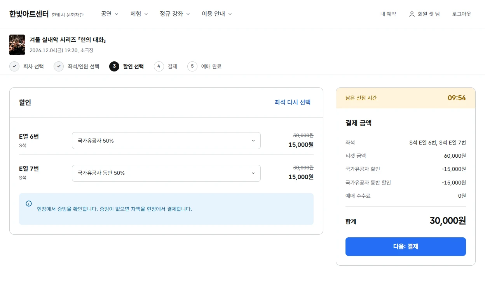
1234567| 번호 | 항목 | 설명(표시 내용, 동작, 처리 규칙, 오류/빈 상태) |
|---|---|---|
| 1 | 좌석 다시 선택 | 선택 화면으로 돌아갑니다(선점은 유지되어 「이어서 진행」 또는 「선점 해제」를 고릅니다). |
| 2 | 매수별 할인 | 좌석(또는 N번째 인원)마다 일반, 장애인 50%, 장애인 동반 50%, 국가유공자 50%, 국가유공자 동반 50%, 다자녀 30% 중 하나. 정규 강좌는 동반 할인이 없고, 할인을 적용하지 않는 프로그램은 일반만 고릅니다. 할인액은 매수별로 원 미만을 버립니다. |
| 3 | 검증 규칙 | 장애인, 국가유공자 본인 할인은 각 1매까지, 동반 할인은 본인 할인 매수 이하. 어기면 경고와 함께 「다음: 결제」를 막습니다. |
| 4 | 증빙 안내 | 「현장에서 증빙을 확인합니다. 증빙이 없으면 차액을 현장에서 결제합니다.」 증빙 파일은 받지 않습니다(SER-004). |
| 5 | 남은 선점 시간 | mm:ss 로 줄어들고, 화면 낭독기에는 분이 바뀔 때만 알립니다. 0이 되면 「선점 시간이 지나 좌석이 해제되었습니다.」와 함께 선택 화면으로 돌아갑니다. |
| 6 | 결제 금액 | 좌석, 티켓 금액, 할인 유형별 차감, 예매 수수료 0원, 합계. 고를 때마다 바로 다시 계산합니다. |
| 7 | 다음: 결제 | 고른 할인은 결제 단계로 넘기고, 금액은 결제 승인 때 서버가 다시 계산해 대조합니다. |
비고선점이 끝난 주소로 들어오면 「선점 시간이 지났습니다.」와 「좌석 다시 선택」, 결제가 끝난 선점이면 「이미 예매가 완료되었습니다.」를 보입니다.
| 화면 ID | UI-U07 | 화면명 | 결제 | 사용자 | 회원 |
|---|---|---|---|---|---|
| 경로 | #/booking/:holdId/pay | 관련 요구사항 | SFR-010, SFR-011, SIR-001, SER-007 | ||
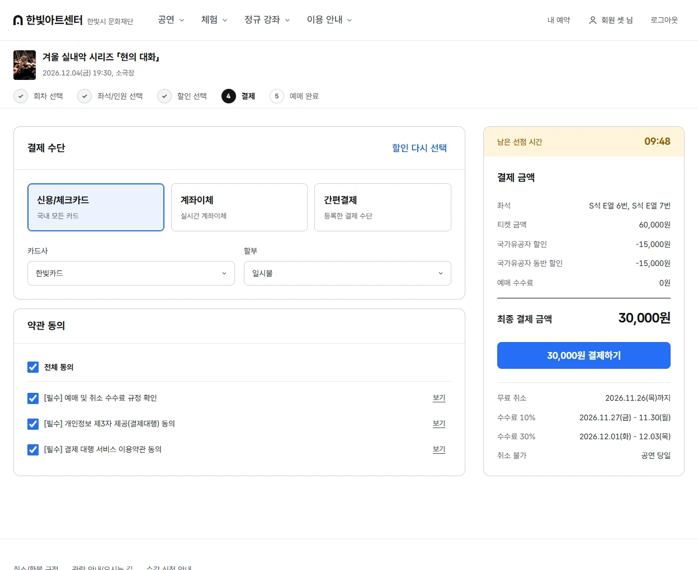
123456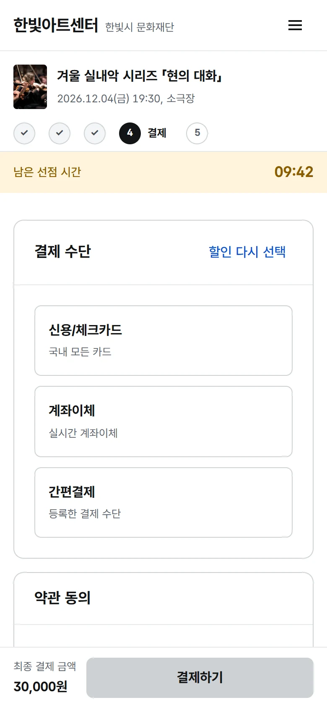
| 번호 | 항목 | 설명(표시 내용, 동작, 처리 규칙, 오류/빈 상태) |
|---|---|---|
| 1 | 결제 수단 | 신용/체크카드, 계좌이체, 간편결제 중 하나(라디오 그룹). 고른 수단은 테두리로 표시합니다. |
| 2 | 카드사, 할부 | 카드 선택 시에만 보입니다. 카드사를 고르지 않으면 칸 아래 「카드사를 선택해 주세요.」를 보이고 초점을 옮깁니다. |
| 3 | 전체 동의 | 필수 3개(예매 및 취소 수수료 규정, 개인정보 제3자 제공(결제대행), 결제대행 서비스 이용약관)를 한 번에 고릅니다. 각 항목의 「보기」는 약관 대화상자를 엽니다. |
| 4 | 최종 결제 금액 | 할인 단계에서 고른 금액. 승인 때 서버가 선점 유효성과 금액을 다시 계산해 다르면 결제를 즉시 취소합니다(SFR-011, SER-007). |
| 5 | 취소 수수료 일정 | 관람일 기준 실제 날짜로 「무료 취소 2026.11.26(목)까지」, 수수료 10%, 30% 기간, 당일 취소 불가를 보입니다. |
| 6 | 결제하기 | 「30,000원 결제하기」. 모든 조건을 채워야 활성화됩니다. 결제 단계는 결제대행 결제창 자리이며, 프로토타입은 모의 어댑터로 승인합니다. |
비고결제 수단을 고르지 않거나 필수 약관이 빠지면 「결제 수단을 선택해 주세요.」, 「필수 약관에 모두 동의해 주세요.」를 알리고 해당 항목으로 초점을 옮깁니다.
| 화면 ID | UI-U08 | 화면명 | 결제 결과(성공) | 사용자 | 회원 |
|---|---|---|---|---|---|
| 경로 | #/payment/success | 관련 요구사항 | SFR-010, SFR-011, SIR-002, QUR-007 | ||
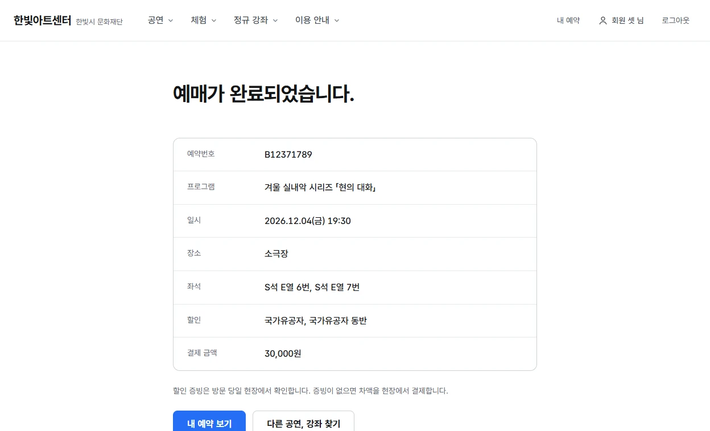
1234| 번호 | 항목 | 설명(표시 내용, 동작, 처리 규칙, 오류/빈 상태) |
|---|---|---|
| 1 | 결과 제목 | 승인 성공 시 「예매가 완료되었습니다.」. 같은 주문은 다시 그려도 승인 요청을 한 번만 보냅니다(서버도 멱등). |
| 2 | 예약 요약 | 예약번호(B+8자리), 프로그램, 일시, 장소, 좌석(R석 E열 6번 형식) 또는 인원, 할인, 결제 금액. |
| 3 | 안내 문구 | 할인을 고른 경우 「할인 증빙은 방문 당일 현장에서 확인합니다.」, 아니면 내 예약 안내. |
| 4 | 내 예약 보기 | 내 예약 목록으로 이동합니다. 옆의 「다른 공연, 강좌 찾기」는 목록으로 갑니다. |
비고실패 결과(#/payment/fail)는 「결제가 완료되지 않았습니다.」와 사유, 「선점은 남은 시간 동안 유지됩니다.」 안내, 「할인 선택으로 돌아가기」를 보입니다. 승인 후 재검증 실패는 「승인된 결제는 자동으로 취소되었습니다.」를 덧붙입니다.
| 화면 ID | UI-U10 | 화면명 | 내 예약 목록 | 사용자 | 회원 |
|---|---|---|---|---|---|
| 경로 | #/me/bookings | 관련 요구사항 | SFR-012, SFR-016 | ||
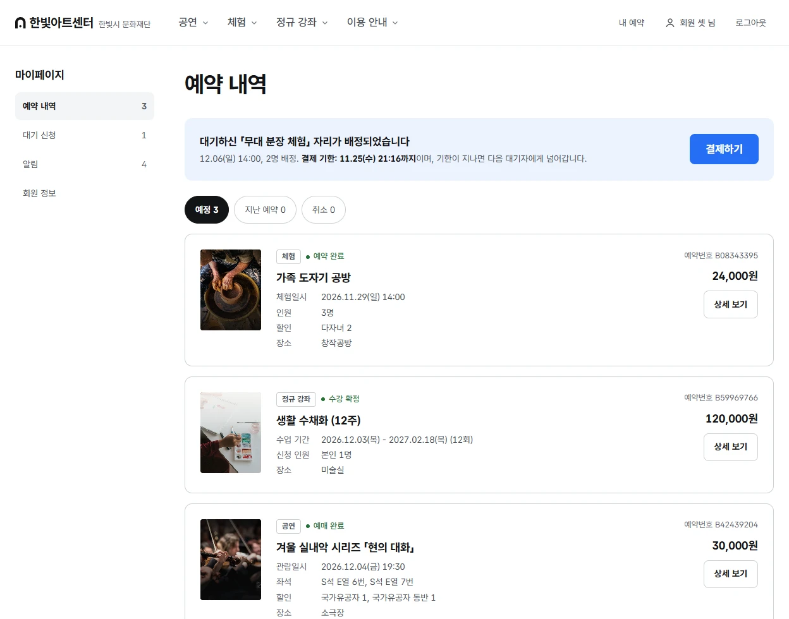
12345| 번호 | 항목 | 설명(표시 내용, 동작, 처리 규칙, 오류/빈 상태) |
|---|---|---|
| 1 | 마이페이지 메뉴 | 예약 내역(예정 건수), 대기 신청(진행 중 건수), 알림(안 읽은 건수), 회원 정보. 860px 이하에서는 밑줄 탭으로 바뀝니다. |
| 2 | 대기 승격 안내 | 승격된 대기가 있으면 맨 위에 「대기하신 「프로그램」 자리가 배정되었습니다」, 배정 수량, 결제 기한(「월.일(요일) 시:분까지」 형식)과 「결제하기」를 보입니다. |
| 3 | 상태 탭 | 예정, 지난 예약, 취소와 각 건수. 예정은 가까운 일정 순, 나머지는 최근 예약 순입니다. |
| 4 | 예약 카드 | 포스터, 유형, 상태(예매 완료, 예약 완료, 수강 확정 / 관람 완료 / 예약 취소), 제목, 일시, 좌석 또는 인원, 할인, 장소. |
| 5 | 예약번호, 금액 | 예약번호를 누르면 예약 상세로 이동하고, 「상세 보기」는 카드 안에서 결제 정보와 환불 미리보기, 예약 취소를 펼칩니다. |
비고탭별 빈 상태: 「예정된 예약이 없습니다.」, 「지난 예약이 없습니다.」, 「취소한 예약이 없습니다.」. 불러오기 실패 시 「내용을 불러오지 못했습니다.」와 「다시 불러오기」.
| 화면 ID | UI-U11 | 화면명 | 예약 상세, 예약 취소 | 사용자 | 회원 |
|---|---|---|---|---|---|
| 경로 | #/me/bookings/:id | 관련 요구사항 | SFR-012, SFR-013, SFR-014, DAR-003, DAR-004 | ||
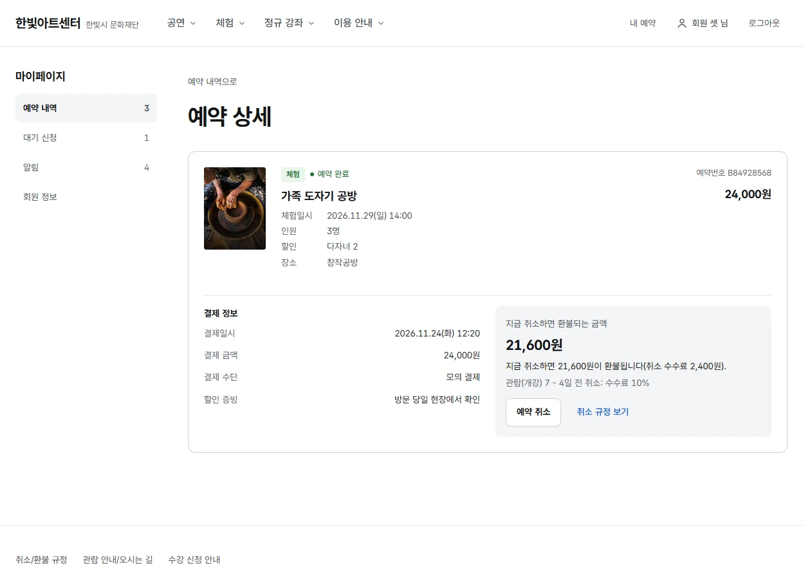
12345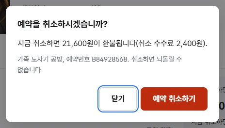
| 번호 | 항목 | 설명(표시 내용, 동작, 처리 규칙, 오류/빈 상태) |
|---|---|---|
| 1 | 예약 내역으로 | 목록으로 돌아갑니다. |
| 2 | 예약 내용 | 유형, 상태, 제목, 일시, 인원 또는 좌석, 할인(별도 줄), 장소. |
| 3 | 결제 정보 | 결제일시, 결제 금액, 결제 수단(모의 결제), 할인 증빙(방문 당일 현장에서 확인). |
| 4 | 환불 미리보기 | 서버와 같은 정책 코드로 지금 취소하면 받을 금액을 계산합니다. 8일 전까지 전액, 7-4일 전 90%, 3-1일 전 70%, 정규 강좌 개강 후 1/3 경과 전 2/3, 1/2 경과 전 1/2, 이후 환불 없음. 환불액은 원 미만 버림, 수수료는 결제액 - 환불액. D-day 는 한국 시간 달력 날짜로 셉니다. |
| 5 | 예약 취소 | 서버 시각을 다시 맞춰 금액을 새로 계산한 뒤 확인 대화상자를 엽니다. 「예약 취소하기」를 누르면 예약 전체를 취소하고 「예약이 취소되었습니다. 21,600원이 결제 수단으로 환불됩니다(취소 수수료 2,400원).」처럼 알립니다. 중복 요청은 막습니다. |
비고당일(D-0)은 「관람(개강) 당일에는 취소할 수 없습니다.」와 함께 취소 버튼을 두지 않고, 끝난 예약은 「이미 끝난 예약은 취소할 수 없습니다.」를 보입니다.
| 화면 ID | UI-U12 | 화면명 | 대기 신청 목록 | 사용자 | 회원 |
|---|---|---|---|---|---|
| 경로 | #/me/waitlist | 관련 요구사항 | SFR-015, SFR-016 | ||
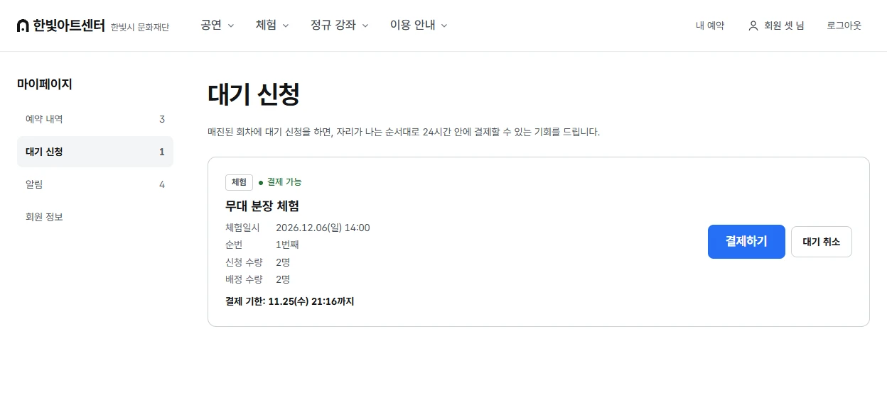
12345| 번호 | 항목 | 설명(표시 내용, 동작, 처리 규칙, 오류/빈 상태) |
|---|---|---|
| 1 | 안내 | 「매진된 회차에 대기 신청을 하면, 자리가 나는 순서대로 24시간 안에 결제할 수 있는 기회를 드립니다.」 |
| 2 | 대기 카드 | 유형, 상태(결제 가능, 대기 중), 제목, 일시, 순번(N번째), 신청 수량, 배정 수량. 결제 가능한 건을 위에 둡니다. |
| 3 | 결제 기한 | 승격된 건은 「결제 기한: 월.일(요일) 시:분까지」로 보입니다. 승격 시각부터 24시간이며 지나면 다음 순번으로 넘어갑니다. D-2 안으로 넘어간 만료분은 일반 판매로 풉니다. |
| 4 | 결제하기 | 배정된 자리(공연은 취소된 좌석 그대로)로 선점을 만들고 할인 선택 단계로 이동합니다. 남은 선점 시간은 「23시간 59분」처럼 보입니다. |
| 5 | 대기 취소 | 확인 대화상자 후 취소합니다. 승격된 건은 「배정된 자리도 함께 다음 대기자에게 넘어갑니다.」, 대기 중인 건은 순번이 사라진다는 안내를 보입니다. |
비고내역이 없으면 「대기 신청한 내역이 없습니다.」와 「예매할 공연, 강좌 찾기」를 보입니다.
| 화면 ID | UI-U13 | 화면명 | 알림함 | 사용자 | 회원 |
|---|---|---|---|---|---|
| 경로 | #/me/notifications | 관련 요구사항 | SFR-017 | ||
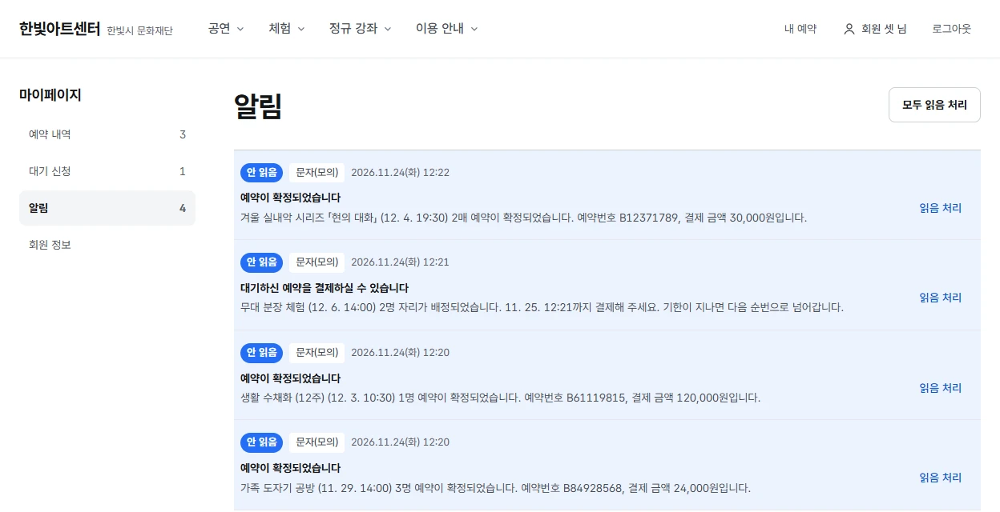
1234| 번호 | 항목 | 설명(표시 내용, 동작, 처리 규칙, 오류/빈 상태) |
|---|---|---|
| 1 | 모두 읽음 처리 | 안 읽은 알림이 있을 때만 보입니다. 처리 후 메뉴의 안 읽은 건수가 함께 줄어듭니다. |
| 2 | 알림 머리 | 안 읽음 표시, 발송 채널(문자(모의)), 발송 일시(2026.11.24(화) 12:04 형식). |
| 3 | 알림 내용 | 결제 완료, 취소, 환불, 대기 승격, 결제 기한 만료, 회차 취소 알림. 문자, 알림톡 발송 자리에 남기는 발송 기록과 같은 내용입니다(SFR-017). |
| 4 | 읽음 처리 | 한 건씩 읽음으로 바꿉니다. 화면 낭독기에는 「(알림 제목) 읽음 처리」로 읽힙니다. |
비고알림이 없으면 「받은 알림이 없습니다.」와 「예매할 공연, 강좌 찾기」를 보입니다.
| 화면 ID | UI-U14 | 화면명 | 회원 정보 | 사용자 | 회원 |
|---|---|---|---|---|---|
| 경로 | #/account | 관련 요구사항 | SFR-002, SER-001, SER-004 | ||
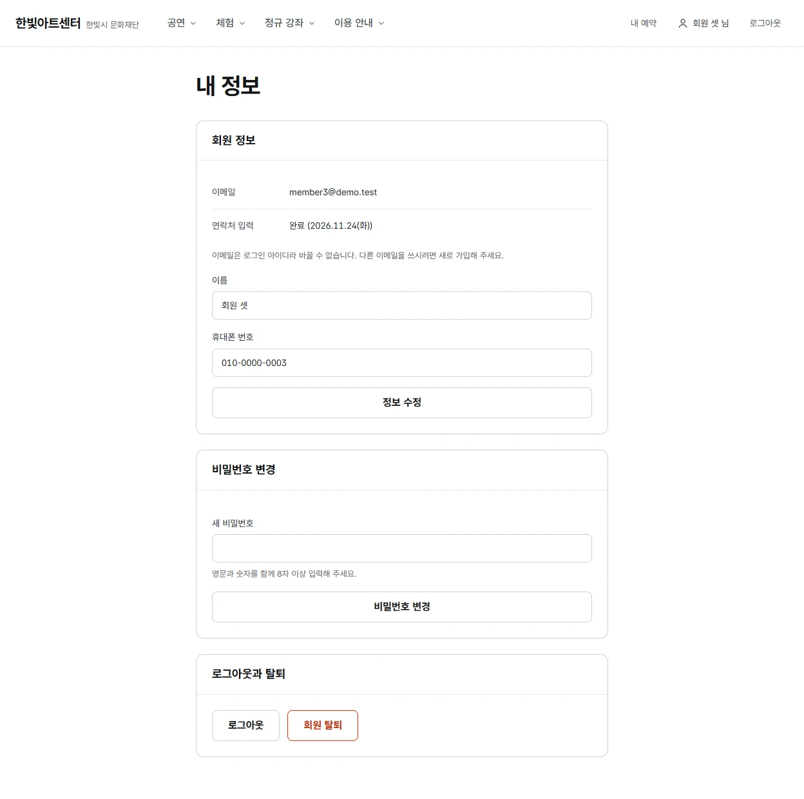
1234| 번호 | 항목 | 설명(표시 내용, 동작, 처리 규칙, 오류/빈 상태) |
|---|---|---|
| 1 | 회원 정보 | 이메일, 연락처 입력 완료일(2026.11.24(화) 형식). 이메일은 로그인 아이디라 바꿀 수 없다는 안내를 붙입니다. 수집 항목은 이메일, 이름, 휴대폰 번호뿐입니다(SER-004). |
| 2 | 연락처 수정 | 이름(50자까지), 휴대폰 번호(010으로 시작하는 숫자 10-11자리, 하이픈 자동 정리). 오류는 칸 아래에, 성공은 「회원 정보를 수정했습니다.」로 알립니다. |
| 3 | 비밀번호 변경 | 영문과 숫자를 함께 8자 이상(SER-001). 성공 시 「비밀번호를 변경했습니다.」. |
| 4 | 로그아웃, 회원 탈퇴 | 탈퇴는 확인 단계에서 「진행 중인 예약이 있으면 탈퇴할 수 없습니다.」를 안내하고, 서버가 진행 중 예약을 확인해 막습니다. 탈퇴하면 이름과 휴대폰 번호를 바로 지웁니다. |
비고공개 시연 환경에서 README 에 공개된 시연 계정은 연락처 수정, 탈퇴가 막히고 비밀번호 변경 칸을 감춥니다(「시연용 계정은 변경할 수 없습니다.」).
| 화면 ID | UI-U15 | 화면명 | 회원 가입(계정 정보, 약관 동의, 연락처 입력) | 사용자 | 비회원 |
|---|---|---|---|---|---|
| 경로 | #/signup, #/signup/contact | 관련 요구사항 | SFR-001, SIR-005, SIR-006, SER-004 | ||
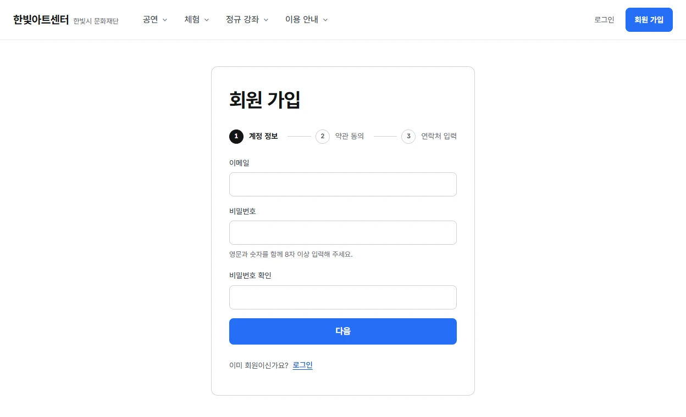
12345| 번호 | 항목 | 설명(표시 내용, 동작, 처리 규칙, 오류/빈 상태) |
|---|---|---|
| 1 | 가입 단계 | 계정 정보 > 약관 동의 > 연락처 입력. 3단계는 이름과 휴대폰 번호 입력만 받으므로 본인 인증처럼 보이는 문구를 쓰지 않습니다(SIR-006 모의 대체). |
| 2 | 이메일 | 형식이 틀리면 「이메일 주소 형식이 올바르지 않습니다. 예: name@example.com 형식으로 입력해 주세요.」 |
| 3 | 비밀번호 규칙 | 영문과 숫자를 함께 8자 이상. 확인 칸과 다르면 「비밀번호가 서로 다릅니다.」 |
| 4 | 다음 | 검사를 통과하면 약관 동의로 이동합니다. 약관 단계는 [필수] 이용약관, [필수] 개인정보 수집과 이용, [선택] 소식 수신과 전체 동의, 「보기」 대화상자를 두며 필수를 모두 골라야 「다음」이 켜집니다. |
| 5 | 로그인 링크 | 이미 회원이면 로그인으로 이동합니다. 로그인은 실패를 반복하면 인증 서비스가 지연시키고, 연락처 입력을 마치지 못한 계정은 그 단계로 보냅니다. |
비고비밀번호 재설정(#/reset)은 가입한 이메일로 링크를 보내고, 링크로 들어오면 회원 정보에서 새 비밀번호를 정합니다.
| 화면 ID | UI-A02 | 화면명 | 대시보드 | 사용자 | 운영 담당, 정산 담당 |
|---|---|---|---|---|---|
| 경로 | admin.html#/ | 관련 요구사항 | SFR-018 | ||
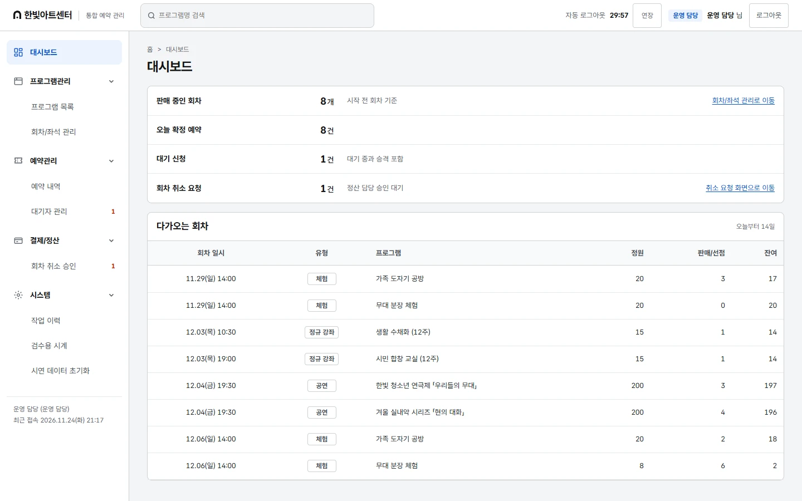
1234567| 번호 | 항목 | 설명(표시 내용, 동작, 처리 규칙, 오류/빈 상태) |
|---|---|---|
| 1 | 기관명 | 한빛아트센터 통합 예약 관리. 누르면 대시보드로 갑니다. |
| 2 | 통합 검색 | 운영 담당만 보입니다. 프로그램명을 넣으면 프로그램 목록을 그 이름으로 거릅니다. |
| 3 | 자동 로그아웃 | 마지막 화면 이동이나 「연장」 뒤 30분이 지나면 로그아웃합니다. 1분 남으면 강조하고 화면 낭독기에 알립니다. |
| 4 | 담당자, 역할 | 역할 칩(운영 담당, 정산 담당)과 이름, 「로그아웃」. |
| 5 | 좌측 메뉴 트리 | 대시보드, 프로그램관리, 예약관리, 결제/정산, 시스템 5묶음을 접고 폅니다. 역할과 환경에 맞는 메뉴만 보이고, 주소로 직접 들어와도 「이 메뉴를 쓸 권한이 없습니다」로 막습니다(데이터는 행 단위 접근 정책이 다시 막음). 대기자, 취소 요청 건수를 메뉴 옆에 표시합니다. |
| 6 | 주요 수치 | 판매 중인 회차(시작 전 회차 기준), 오늘 확정 예약, 대기 신청(대기 중과 승격 포함), 회차 취소 요청(정산 담당 승인 대기). 바로가기 링크가 붙습니다. |
| 7 | 다가오는 회차 | 오늘부터 14일 안의 회차 일시(12.04(금) 19:30 형식), 유형, 프로그램, 정원, 판매/선점, 잔여. 없으면 「14일 안에 시작하는 회차가 없습니다.」 |
비고정산 담당은 같은 자리에 오늘 결제액, 오늘 환불액, 오늘 확정 예약, 회차 취소 승인 대기를 보입니다. 관리자 로그인(UI-A01)은 이메일, 비밀번호와 「사용자 화면으로 이동」을 두고, 담당자가 아닌 계정은 「접근 권한이 없습니다」와 「다른 계정으로 로그인」을 보입니다.
| 화면 ID | UI-A03 | 화면명 | 프로그램 목록 | 사용자 | 운영 담당 |
|---|---|---|---|---|---|
| 경로 | admin.html#/programs | 관련 요구사항 | SFR-019 | ||
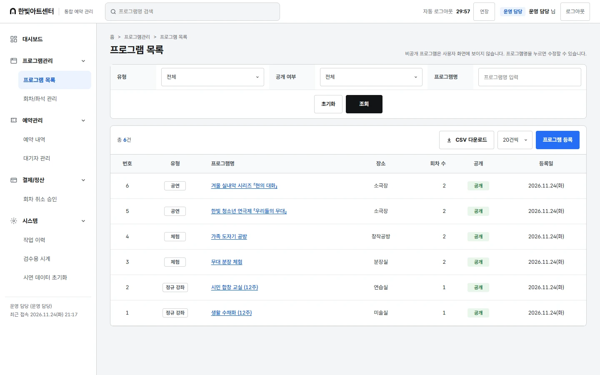
123456| 번호 | 항목 | 설명(표시 내용, 동작, 처리 규칙, 오류/빈 상태) |
|---|---|---|
| 1 | 경로, 제목, 도움말 | 홈 > 프로그램관리 > 프로그램 목록. 오른쪽 도움말은 「비공개 프로그램은 사용자 화면에 보이지 않습니다.」 |
| 2 | 조회 조건 | 유형, 공개 여부, 프로그램명. 「초기화」와 「조회」. 상단 통합 검색으로 들어오면 프로그램명이 채워집니다. |
| 3 | 건수 | 「총 6건」. 화면 낭독기에 바뀐 건수를 알립니다. |
| 4 | CSV 다운로드 | 조회 결과를 「프로그램목록_20261124.csv」로 내려받습니다(UTF-8 BOM, 수식 주입 방지). 0건이면 「내려받을 내역이 없습니다.」를 알립니다. |
| 5 | 프로그램 등록 | 등록 화면으로 이동합니다. 저장 후 회차 등록을 이어서 안내합니다. |
| 6 | 목록 표 | 번호, 유형 칩, 프로그램명(누르면 수정), 장소, 회차 수, 공개 여부 칩, 등록일(2026.11.24(화)). 숫자는 오른쪽 정렬, 20건씩(50건 선택) 나눕니다. |
비고프로그램 등록, 수정 화면은 기본 정보(유형, 프로그램명 100자, 한 줄 소개, 상세 설명, 장소, 대상, 공개 여부, 할인 적용, 취소 규정 표시)와 포스터(사진, 글자 색, 시리즈명, 제목, 부제), 회차 목록으로 이루어집니다. 회차가 있으면 유형을 바꿀 수 없습니다.
| 화면 ID | UI-A05 | 화면명 | 회차/좌석 관리(목록) | 사용자 | 운영 담당 |
|---|---|---|---|---|---|
| 경로 | admin.html#/offerings | 관련 요구사항 | SFR-020 | ||
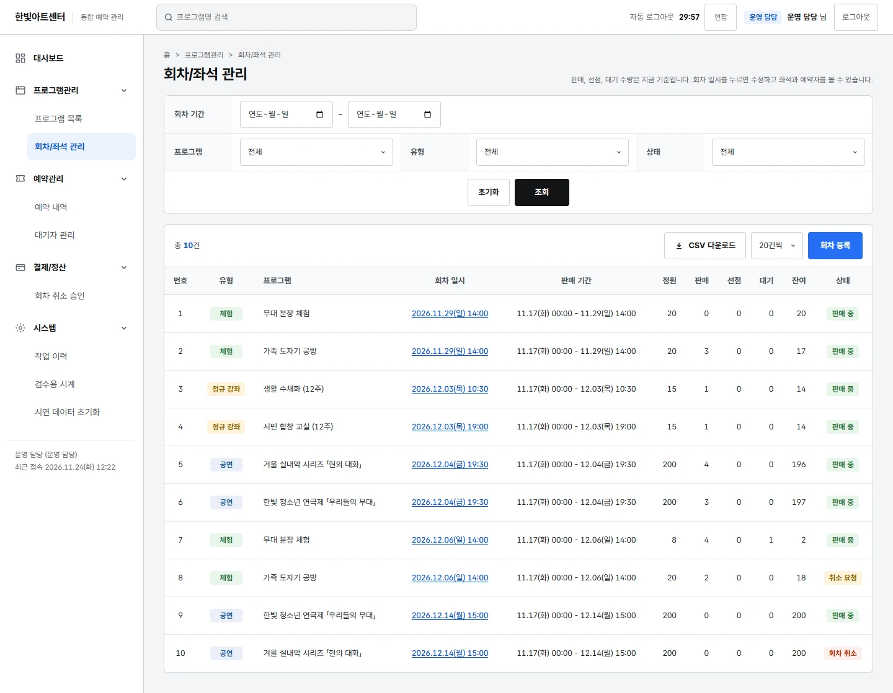
1234| 번호 | 항목 | 설명(표시 내용, 동작, 처리 규칙, 오류/빈 상태) |
|---|---|---|
| 1 | 조회 조건 | 회차 기간, 프로그램, 유형, 상태(판매 중, 판매 전, 판매 종료, 취소 요청, 회차 취소). |
| 2 | 건수, 내려받기, 등록 | 총 건수, CSV 다운로드(회차목록_날짜.csv), 페이지당 건수, 「회차 등록」. |
| 3 | 목록 열 | 번호, 유형, 프로그램, 회차 일시(누르면 수정과 좌석 현황), 판매 기간(11.17(화) 00:00 - 12.04(금) 19:30), 정원, 판매, 선점, 대기, 잔여, 상태. |
| 4 | 상태 칩 | 판매 전, 판매 중, 판매 종료, 취소 요청, 회차 취소를 글자와 색으로 함께 보입니다. 판단은 서버가 다시 합니다. |
비고판매, 선점, 대기 수량은 지금 기준입니다. 결제 진행 중인 수량은 선점에 포함합니다.
| 화면 ID | UI-A06 | 화면명 | 회차 등록, 수정 | 사용자 | 운영 담당 |
|---|---|---|---|---|---|
| 경로 | admin.html#/offerings/new, #/offerings/:id | 관련 요구사항 | SFR-020, SER-006 | ||
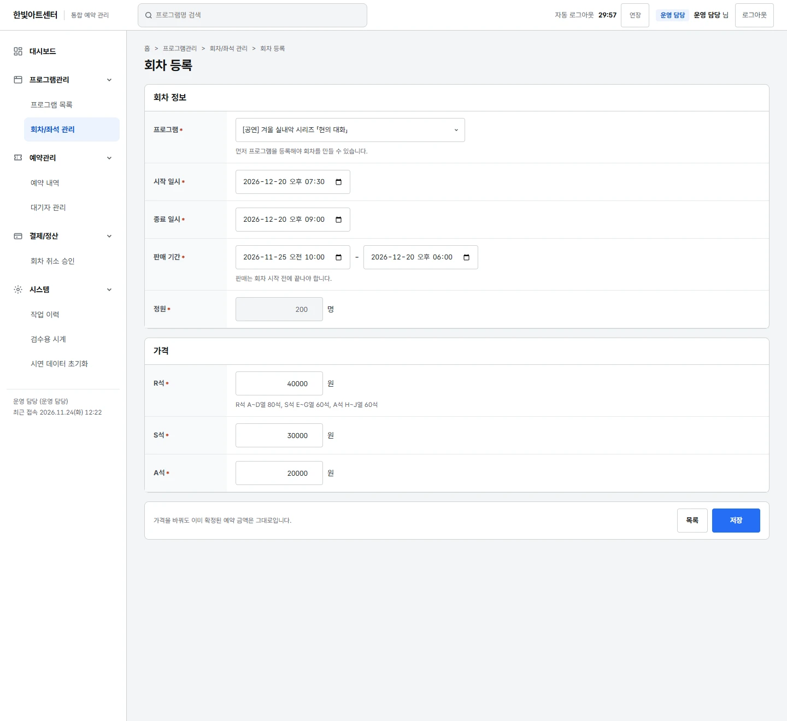
123456| 번호 | 항목 | 설명(표시 내용, 동작, 처리 규칙, 오류/빈 상태) |
|---|---|---|
| 1 | 프로그램 | 먼저 등록한 프로그램을 고릅니다. 등록 후에는 바꿀 수 없습니다. 유형에 따라 정원, 가격, 수업 횟수 칸이 바뀝니다. |
| 2 | 시작, 종료 일시 | 한국 시간 입력, 저장은 UTC. 지난 일시로 등록할 수 없고 종료는 시작보다 늦어야 합니다. 정규 강좌는 첫 수업 시작과 마지막 수업 종료입니다. |
| 3 | 판매 기간 | 판매 종료는 판매 시작보다 늦고 회차 시작 전에 끝나야 합니다. |
| 4 | 정원 | 공연은 좌석 수(200석)로 정해집니다. 체험, 강좌는 1-10,000명이며 판매, 선점, 대기 배정된 수보다 작게 줄일 수 없습니다. |
| 5 | 가격 | 공연은 R석(A-D열 80석), S석(E-G열 60석), A석(H-J열 60석) 가격, 그 밖은 1인 가격. 1원 이상(무료 회차 불가), 1,000원 단위 입력. 바꿔도 이미 확정된 예약 금액은 그대로입니다. |
| 6 | 저장 | 「목록」과 「저장」. 저장하면 사용자 화면에 바로 반영되고 회차 등록, 수정, 가격 설정이 작업 이력에 남습니다(SER-006). |
비고수정 화면은 같은 양식 아래 좌석 현황(등급별 판매 가능, 선점, 대기 배정, 판매 수와 축소 배치도)을 보이고, 취소되었거나 취소 요청 중인 회차는 고칠 수 없습니다.
| 화면 ID | UI-A07 | 화면명 | 예약 내역 | 사용자 | 운영 담당, 정산 담당 |
|---|---|---|---|---|---|
| 경로 | admin.html#/bookings | 관련 요구사항 | SFR-021, SER-002, SER-005, SER-006 | ||
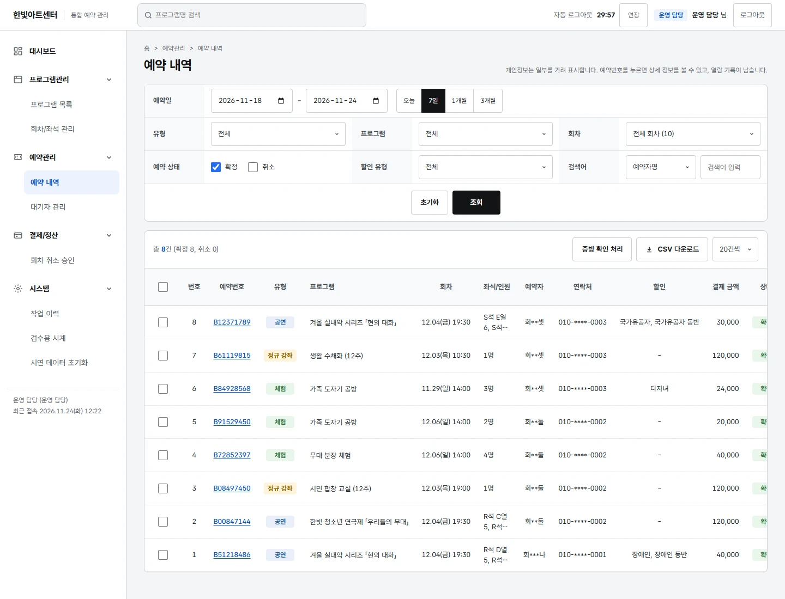
123456| 번호 | 항목 | 설명(표시 내용, 동작, 처리 규칙, 오류/빈 상태) |
|---|---|---|
| 1 | 조회 조건 | 예약일(오늘, 7일, 1개월, 3개월 빠른 기간, 기본 7일), 유형, 프로그램, 회차, 예약 상태(확정 기본 선택, 취소), 할인 유형, 검색어(예약자명, 예약번호, 휴대폰 뒤 4자리). |
| 2 | 건수 | 「총 8건 (확정 8, 취소 0)」처럼 상태별 건수를 함께 보입니다. |
| 3 | 증빙 확인 처리 | 운영 담당만 보입니다. 선택한 확정 예약의 증빙 확인 전 할인 매수를 현장 확인 완료로 기록합니다(파일은 받지 않음). |
| 4 | 선택 | 쪽 전체 선택과 행 선택 체크 상자. |
| 5 | 예약번호 | 누르면 예약 상세(개인정보 전체)를 엽니다. |
| 6 | 목록 열 | 유형, 프로그램, 회차, 좌석/인원, 예약자(김*수), 연락처(010-****-1234), 할인, 결제 금액(오른쪽 정렬), 상태(확정, 취소), 증빙(확인 전, 확인 완료), 예약 일시. |
비고예약번호를 누르면 이름, 휴대폰, 이메일 전체를 보이는 예약 상세 대화상자를 열고 「이 열람은 작업 이력에 기록되었습니다.」를 표시합니다(SER-005, SER-006).
| 화면 ID | UI-A08 | 화면명 | 대기자 관리 | 사용자 | 운영 담당 |
|---|---|---|---|---|---|
| 경로 | admin.html#/waitlist | 관련 요구사항 | SFR-021, SFR-016, SER-005 | ||
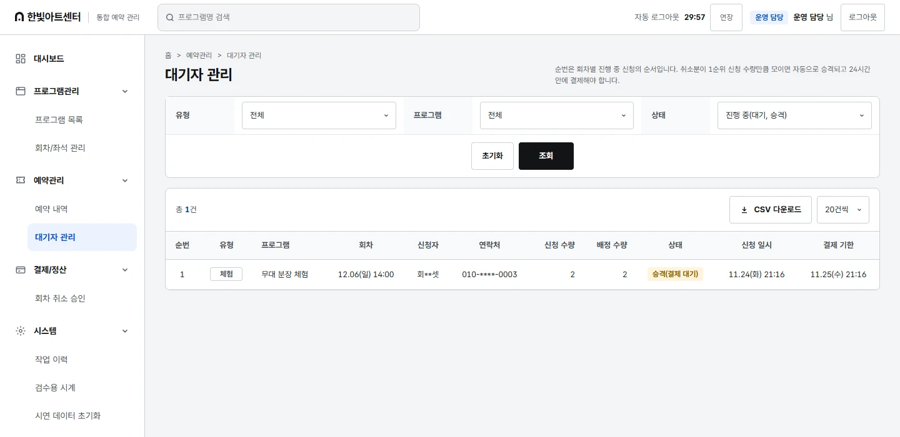
12345| 번호 | 항목 | 설명(표시 내용, 동작, 처리 규칙, 오류/빈 상태) |
|---|---|---|
| 1 | 규칙 안내 | 「순번은 회차별 진행 중 신청의 순서입니다. 취소분이 1순위 신청 수량만큼 모이면 자동으로 승격되고 24시간 안에 결제해야 합니다.」 |
| 2 | 조회 조건 | 유형, 프로그램, 상태(진행 중(대기, 승격) 기본, 전체, 대기 중, 승격(결제 대기), 종료). |
| 3 | 목록 열 | 순번, 유형, 프로그램, 회차, 신청자, 연락처(가림), 신청 수량, 배정 수량, 상태, 신청 일시, 결제 기한(승격 건만). |
| 4 | 상태 칩 | 대기 중, 승격(결제 대기), 예매 완료, 기한 만료, 신청 취소, 대기 종료(D-2 일반 판매 전환). |
| 5 | CSV 다운로드 | 대기자목록_날짜.csv. 개인정보는 가린 값 그대로 내려받습니다. |
비고승격은 회원의 취소 처리 안에서 자동으로 일어나며, 기한 만료는 다음 조회 때 처리합니다(지연 처리).
| 화면 ID | UI-A09 | 화면명 | 결제/환불 내역 | 사용자 | 정산 담당 |
|---|---|---|---|---|---|
| 경로 | admin.html#/payments | 관련 요구사항 | SFR-022, SIR-003, SIR-004, SER-006 | ||
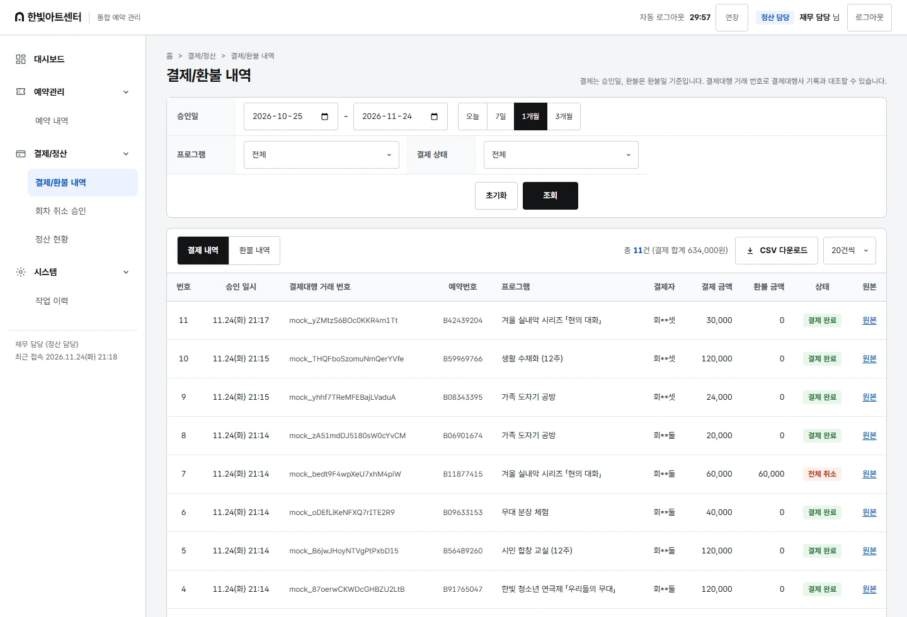
12345| 번호 | 항목 | 설명(표시 내용, 동작, 처리 규칙, 오류/빈 상태) |
|---|---|---|
| 1 | 내역 종류 | 결제 내역과 환불 내역 전환. 조회 조건의 기간 이름도 승인일, 환불일로 바뀝니다. |
| 2 | 조회 조건 | 승인일(기본 이번 달), 프로그램, 결제 상태(결제 완료, 부분 취소, 전체 취소) 또는 환불 사유(회원 취소, 기관 취소, 결제 충돌). |
| 3 | 건수, 합계 | 「총 11건 (결제 합계 664,000원)」처럼 조회 결과의 합계를 함께 보입니다. |
| 4 | 결제 내역 열 | 승인 일시, 결제대행 거래 번호, 예약번호, 프로그램, 결제자(가림), 결제 금액, 환불 금액, 상태, 원본. 환불 내역은 취소 거래 번호, 원 결제 거래 번호, 취소 수수료, 사유, 적용 규정(7 - 4일 전(수수료 10%) 등)을 보입니다. |
| 5 | 원본 | 결제 승인 원본(주문번호, 결제대행 응답)을 대화상자로 보입니다. |
비고결제대행 웹훅은 중복으로 받아도 한 번만 반영하고(SIR-004), 원본 열람은 작업 이력에 남습니다.
| 화면 ID | UI-A10 | 화면명 | 회차 취소 요청, 승인 | 사용자 | 운영 담당, 정산 담당 |
|---|---|---|---|---|---|
| 경로 | admin.html#/cancel-requests | 관련 요구사항 | SFR-023, SER-006 | ||
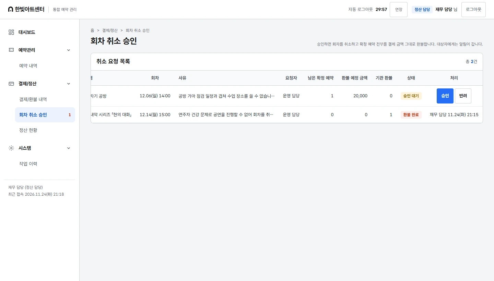
12345| 번호 | 항목 | 설명(표시 내용, 동작, 처리 규칙, 오류/빈 상태) |
|---|---|---|
| 1 | 안내 | 「승인하면 회차를 취소하고 확정 예약 전부를 결제 금액 그대로 환불합니다. 대상자에게는 알림이 갑니다.」 |
| 2 | 요청 목록 열 | 요청 일시, 유형, 프로그램, 회차, 사유, 요청자, 남은 확정 예약, 환불 예정 금액, 기관 환불 건수, 상태(승인 대기, 반려, 환불 진행 중, 환불 완료). |
| 3 | 승인 | 확정 예약 수와 환불 금액, 사유, 요청자를 확인 대화상자로 보이고 「승인하고 환불」을 누르면 회차를 취소하고 전액 일괄 환불합니다. 일부 실패하면 건수와 「환불 다시 실행」을 안내합니다. |
| 4 | 반려 | 확인 후 반려하면 회차가 다시 판매 중이 됩니다. |
| 5 | 처리 결과 | 승인된 건은 「환불 완료」, 환불이 남으면 「환불 진행 중」과 「환불 다시 실행」. 요청, 승인, 반려는 작업 이력에 남습니다. |
비고목록 표는 열이 많아 가로로 밀어 봅니다(캡처는 오른쪽 끝). 운영 담당 화면은 위쪽에 회차 취소 요청 양식(판매 중 회차 선택, 취소 사유 500자)을 두고, 요청하면 정산 담당 결정 전까지 그 회차의 새 예매와 결제가 막힙니다.
| 화면 ID | UI-A11 | 화면명 | 정산 현황 | 사용자 | 정산 담당 |
|---|---|---|---|---|---|
| 경로 | admin.html#/settlement | 관련 요구사항 | SFR-024, DAR-003 | ||
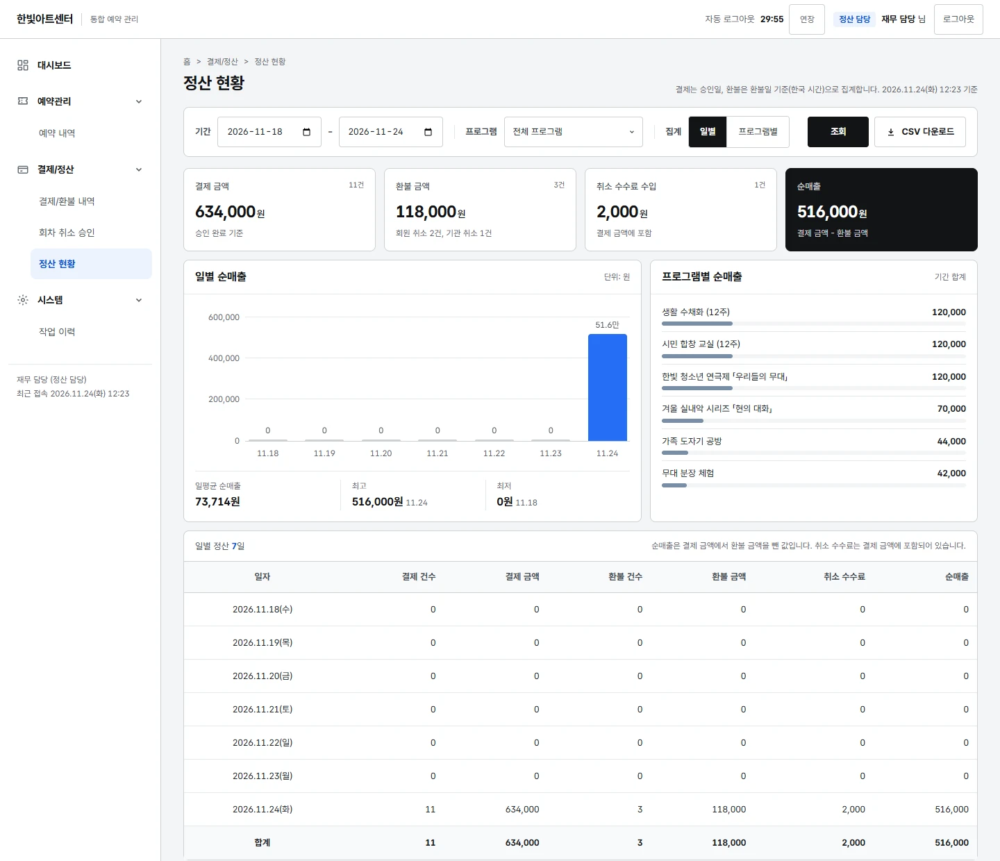
12345| 번호 | 항목 | 설명(표시 내용, 동작, 처리 규칙, 오류/빈 상태) |
|---|---|---|
| 1 | 정산 조건 | 기간(기본 이번 달 1일 - 오늘), 프로그램, 집계(일별, 프로그램별), 「조회」, 「CSV 다운로드」(정산현황_일별_20261118-20261124.csv, 합계 행 포함). |
| 2 | 기간 합계 | 결제 금액(승인 완료 기준, 건수), 환불 금액(회원 취소, 기관 취소 건수), 취소 수수료 수입(결제 금액에 포함), 순매출(결제 금액 - 환불 금액). |
| 3 | 일별 순매출 | 막대 그래프와 일평균, 최고, 최저(12.01 형식). 그래프에는 같은 내용을 글로 담은 대체 설명을 둡니다. |
| 4 | 프로그램별 순매출 | 기간 합계를 프로그램별 비중 막대로 보입니다. |
| 5 | 정산표 | 일자 또는 프로그램, 결제 건수, 결제 금액, 환불 건수, 환불 금액, 취소 수수료, 순매출과 합계 행. 금액은 원 단위 정수, 결제는 승인일, 환불은 환불일(한국 시간) 기준입니다. |
비고기간이 비었거나 거꾸로면 「조회할 기간의 시작일과 종료일을 모두 입력해 주세요.」, 「시작일이 종료일보다 늦습니다.」, 1년(366일)을 넘으면 「기간은 1년(366일) 안으로 선택해 주세요.」
| 화면 ID | UI-A12 | 화면명 | 작업 이력 | 사용자 | 운영 담당, 정산 담당 |
|---|---|---|---|---|---|
| 경로 | admin.html#/audit | 관련 요구사항 | SER-006 | ||
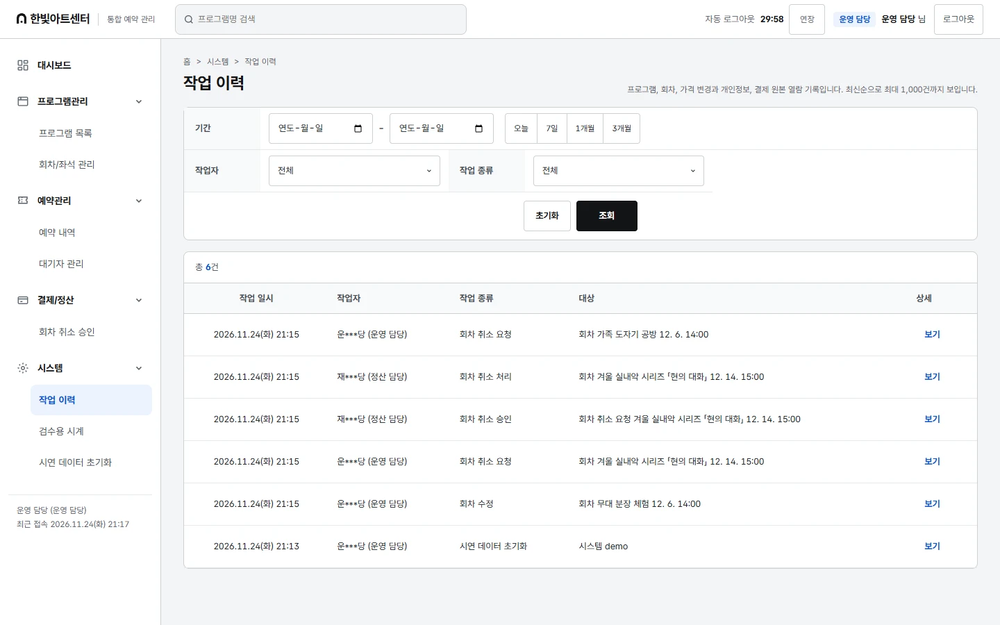
1234| 번호 | 항목 | 설명(표시 내용, 동작, 처리 규칙, 오류/빈 상태) |
|---|---|---|
| 1 | 조회 조건 | 기간(빠른 기간 포함), 작업자, 작업 종류. |
| 2 | 목록 열 | 작업 일시, 작업자(가린 이름과 역할), 작업 종류, 대상, 상세. |
| 3 | 작업 종류 | 프로그램 등록, 수정, 회차 등록, 수정, 가격 설정, 증빙 확인, 개인정보 열람, 결제 원본 열람, 회차 취소 요청, 승인, 반려, 처리, 검수용 시계 변경, 시연 데이터 초기화. |
| 4 | 상세 보기 | 바뀐 값(이전, 이후)을 펼쳐 봅니다. |
비고작업 이력은 화면에서 지우거나 고칠 수 없고, 최신순 최대 1,000건까지 보입니다.
| 화면 ID | UI-A13 | 화면명 | 검수용 시계(검수 환경) | 사용자 | 운영 담당 |
|---|---|---|---|---|---|
| 경로 | admin.html#/system/clock | 관련 요구사항 | SFR-025 | ||
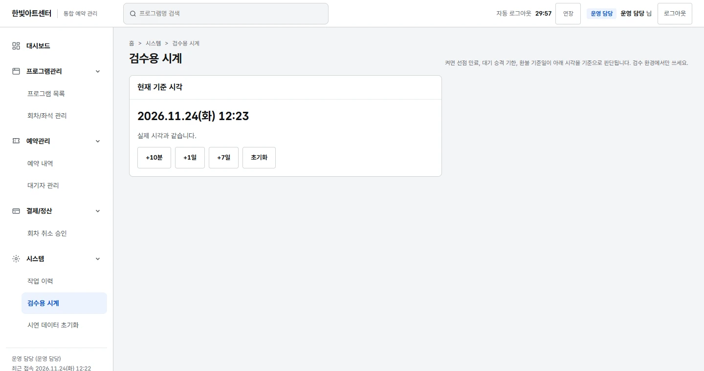
1234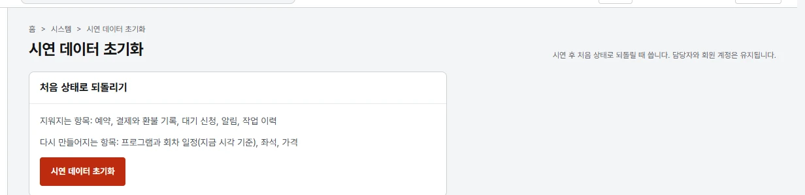
| 번호 | 항목 | 설명(표시 내용, 동작, 처리 규칙, 오류/빈 상태) |
|---|---|---|
| 1 | 안내 | 켜면 선점 만료, 대기 승격 기한, 환불 기준일이 아래 기준 시각으로 판단됩니다. 공개 시연 빌드에서는 메뉴가 없고 DB 함수도 오프셋을 무시합니다(SFR-025). |
| 2 | 현재 기준 시각 | 「실제보다 1일 앞입니다.」처럼 실제 시각과의 차이를 함께 보입니다. |
| 3 | 시계 조정 | +10분, +1일, +7일 등으로 앞당기고 「초기화」로 실제 시각으로 되돌립니다. 켜져 있으면 모든 관리자 화면 위에 띠로 알리고, 변경은 작업 이력에 남습니다. |
| 4 | 시연 데이터 초기화(UI-A14) | 예약, 결제와 환불 기록, 대기, 알림, 작업 이력을 지우고 프로그램과 회차 일정을 지금 시각 기준으로 다시 만듭니다. 담당자와 회원 계정은 유지됩니다. 확인 대화상자(되돌릴 수 없음) 후 실행하고 실행 이력을 남깁니다(SFR-026). |
비고두 화면 모두 운영 담당 전용입니다. 검수용 시계는 검수, 로컬 환경에서만, 시연 데이터 초기화는 공개 시연, 로컬 환경에서만 메뉴에 보이며, 주소로 들어와도 「이 환경에서는 쓸 수 없는 메뉴입니다」로 막습니다.